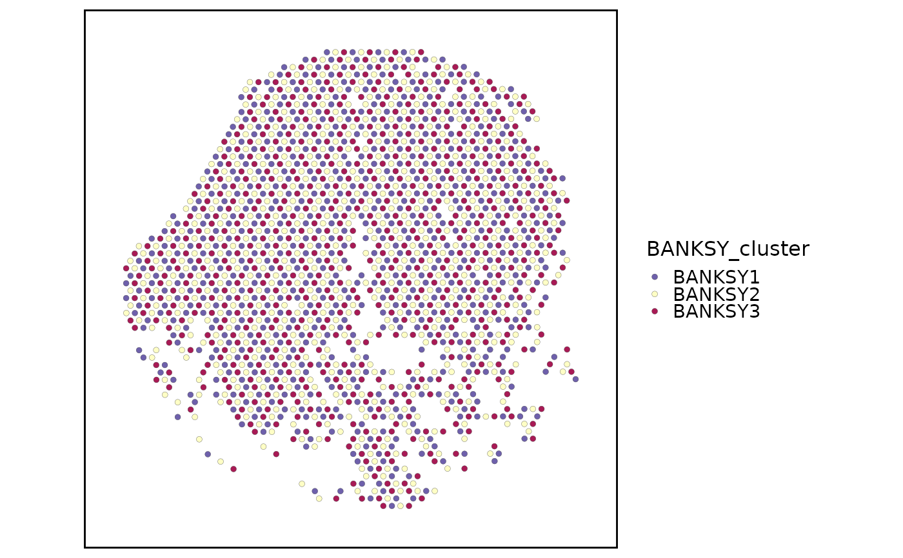

Build neighborhood-augmented BANKSY features from a spatial Seurat object
and store spatial domain or microenvironment clusters in metadata.
Usage
RunBANKSY(
srt,
assay = NULL,
layer = "data",
features = NULL,
image = NULL,
coord.cols = c("col", "row"),
lambda = 0.2,
k_geom = 15,
M = 1,
npcs = 20,
use_agf = FALSE,
algo = "leiden",
k_neighbors = 50,
resolution = 0.6,
group = NULL,
seed = 1,
compute_banksy_params = list(),
run_pca_params = list(),
cluster_banksy_params = list(),
cluster_source = NULL,
cluster_colname = "BANKSY_cluster",
tool_name = "BANKSY",
store_results = TRUE,
verbose = TRUE
)Arguments
- srt
A Seurat object.
- assay
Which assay to use. If
NULL, the default assay of the Seurat object will be used. When the object also containsChromatinAssay, the default assay and additionalChromatinAssaywill be preprocessed sequentially.- layer
Assay layer used as BANKSY input.
- features
Optional features to use. If
NULL, all assay features are used after zero-count filtering.- image
Name of the Seurat spatial image used to recover spot coordinates when they are not already present in metadata. For regular Visium data with only pixel
x/ycoordinates, BayesSpace array coordinates are inferred from the spatial grid.- coord.cols
Metadata coordinate columns used when no image coordinate source is available.
- lambda
BANKSY spatial weighting parameter.
- k_geom
Number of spatial neighbors used by BANKSY.
- M
Highest azimuthal Fourier harmonic passed to BANKSY.
- npcs
Number of principal components to compute.
- use_agf
Whether to use azimuthal Gabor filters.
- algo
Clustering algorithm passed to
Banksy::clusterBanksy().- k_neighbors
Number of neighbors for graph clustering.
- resolution
Graph clustering resolution.
- group
Optional metadata column used by BANKSY for multi-sample scaling. It is copied into the
SpatialExperimentcolData.- seed
Optional seed for PCA and clustering.
- compute_banksy_params
Additional parameters passed to
Banksy::computeBanksy().- run_pca_params
Additional parameters passed to
Banksy::runBanksyPCA().- cluster_banksy_params
Additional parameters passed to
Banksy::clusterBanksy().- cluster_source
Optional BANKSY
colDatacolumn to copy. IfNULL, the first cluster name reported byBanksy::clusterNames()is used when available.- cluster_colname
Metadata column used for BANKSY clusters.
- tool_name
Name used to store detailed results in
srt@tools.- store_results
Whether to store detailed BANKSY results in
srt@tools.- verbose
Whether to print the message. Default is
TRUE.
Value
A Seurat object with BANKSY clusters in metadata. When
store_results = TRUE, detailed results are stored in
srt@tools[[tool_name]].
Examples
data(visium_human_pancreas_sub)
spatial <- visium_human_pancreas_sub
spatial$BANKSY_cluster <- factor(
paste0("BANKSY", (seq_len(ncol(spatial)) - 1) %% 3 + 1)
)
SpatialSpotPlot(
spatial,
group.by = "BANKSY_cluster",
overlay_image = FALSE,
coord.cols = c("x", "y")
)

if (
requireNamespace("Banksy", quietly = TRUE)
) {
spatial <- RunBANKSY(
spatial,
assay = "Spatial",
layer = "counts",
coord.cols = c("x", "y"),
features = rownames(spatial)[1:300],
lambda = 0.2,
k_geom = 8,
resolution = 0.6,
verbose = FALSE
)
}
#> Computing neighbors...
#> Spatial mode is kNN_median
#> Parameters: k_geom=8
#> Done
#> Computing neighbors...
#> Spatial mode is kNN_median
#> Parameters: k_geom=8
#> Done
#> Done
#> Centering
#> Done
#> Using seed=1
#> Using seed=1